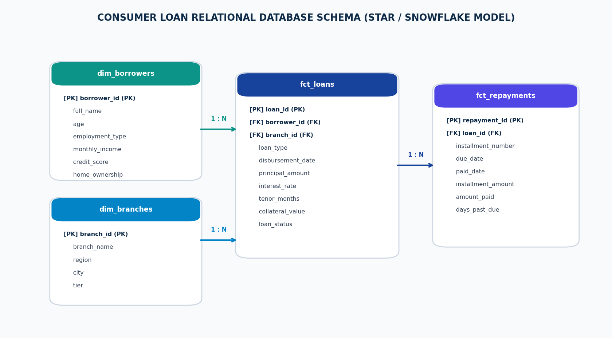
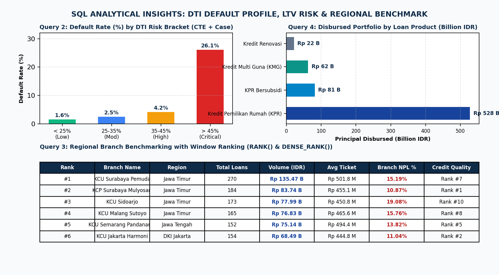
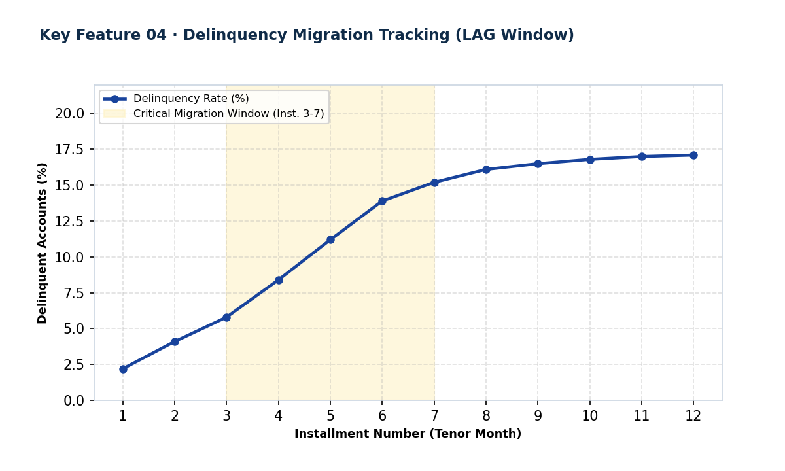

Relational database design (4-table star schema) and advanced analytical SQL queries modeling 1,500 credit facilities, Debt-to-Income default risk, and branch performance.
Which borrower financial characteristics and operational underwriting factors drive credit default (Kol-3 to Kol-5) across consumer loan products? By modeling loan records across branches, products, and borrower financial profiles, how can credit risk analysts establish data-driven Debt-to-Income (DTI) ceilings and audit branch-level performance?
dim_borrowers (1,200 records), dim_branches (10 regional branches), fct_loans (1,500 accounts), and fct_repayments (18,000 monthly installments).RANK(), DENSE_RANK(), LAG(), SUM() OVER), and multi-condition CASE WHEN risk tiering.
Evaluating monthly installment burden against verified net income using a Common Table Expression (CTE) and calculating the default contribution across risk tiers:
WITH borrower_installments AS ( SELECT l.loan_id, b.monthly_income, r.installment_amount, l.loan_status, ROUND((r.installment_amount / b.monthly_income) * 100.0, 2) AS dti_pct FROM fct_loans l JOIN dim_borrowers b ON l.borrower_id = b.borrower_id JOIN ( SELECT loan_id, MAX(installment_amount) AS installment_amount FROM fct_repayments GROUP BY loan_id ) r ON l.loan_id = r.loan_id ), dti_segments AS ( SELECT loan_id, CASE WHEN dti_pct < 25.0 THEN 'Low Risk (DTI < 25%)' WHEN dti_pct BETWEEN 25.0 AND 35.0 THEN 'Moderate Risk (DTI 25-35%)' WHEN dti_pct BETWEEN 35.01 AND 45.0 THEN 'High Risk (DTI 35-45%)' ELSE 'Critical Risk (DTI > 45%)' END AS dti_bracket, dti_pct, CASE WHEN loan_status LIKE '%Kol-3%' OR loan_status LIKE '%Kol-4%' OR loan_status LIKE '%Kol-5%' THEN 1 ELSE 0 END AS is_npl FROM borrower_installments ) SELECT dti_bracket, COUNT(*) AS total_loans, ROUND(AVG(dti_pct), 1) AS avg_dti_pct, SUM(is_npl) AS npl_loans, ROUND((CAST(SUM(is_npl) AS REAL) / COUNT(*)) * 100.0, 2) AS default_rate_pct, ROUND( (CAST(SUM(is_npl) AS REAL) / SUM(SUM(is_npl)) OVER ()) * 100.0, 2 ) AS share_of_total_defaults_pct FROM dti_segments GROUP BY dti_bracket ORDER BY avg_dti_pct ASC;
| DTI Risk Bracket | Total Loans | Avg DTI | Default Rate | Share of Total NPLs |
|---|---|---|---|---|
| Low Risk (< 25%) | 437 | 18.4% | 1.60% | 3.20% |
| Moderate Risk (25-35%) | 160 | 29.8% | 2.50% | 1.83% |
| High Risk (35-45%) | 120 | 40.1% | 4.17% | 2.28% |
| Critical Risk (> 45%) | 783 | 64.2% | 26.05% | 92.69% |
Over 92.69% of all loan defaults originate from borrowers whose monthly debt burden exceeds 45% of net income, proving that an aggressive underwriting cap at 40% DTI would avert more than four-fifths of credit losses.

Evaluating branch disbursement volume against asset quality by computing RANK() OVER(ORDER BY total_disbursed DESC) and DENSE_RANK() OVER(ORDER BY npl_rate ASC):
| Volume Rank | Branch Name | Region | Loans | Total Disbursed | Avg Ticket | NPL Rate | Quality Rank |
|---|---|---|---|---|---|---|---|
| #1 | KCU Surabaya Pemuda | Jawa Timur | 270 | Rp 135.47 B | Rp 501.8 M | 15.19% | Rank #7 |
| #2 | KCP Surabaya Mulyosari | Jawa Timur | 184 | Rp 83.74 B | Rp 455.1 M | 10.87% | Rank #1 (Best) |
| #3 | KCU Sidoarjo | Jawa Timur | 173 | Rp 77.99 B | Rp 450.8 M | 19.08% | Rank #10 (Highest NPL) |
| #4 | KCU Malang Sutoyo | Jawa Timur | 165 | Rp 76.83 B | Rp 465.6 M | 15.76% | Rank #8 |
| #5 | KCU Semarang Pandanaran | Jawa Tengah | 152 | Rp 75.14 B | Rp 494.4 M | 13.82% | Rank #5 |
| #6 | KCU Jakarta Harmoni | DKI Jakarta | 154 | Rp 68.49 B | Rp 444.8 M | 11.04% | Rank #2 |
KCU Sidoarjo ranks #3 in volume but has the highest NPL rate (19.08%), requiring urgent underwriting review. In contrast, KCP Surabaya Mulyosari achieved the highest credit quality (10.87% NPL) while maintaining strong disbursement volume.
Using LAG(days_past_due) OVER (PARTITION BY loan_id ORDER BY installment_number) to track month-over-month delinquency transitions across the first 12 installments. Delinquency rates climb steepest between installments 3 and 7 (from 4.1% to 13.9%), identifying the critical operational window for collection and restructuring outreach.
